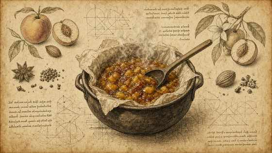

01
Chutney: mele, mango, pomodori verdi, albicocche, zucchero, pectina, lamponi, scorza di lime, menta; sobbollire a fuoco basso con carta forno, senza girare.
Chutney: apples, mango, green tomatoes, apricots, sugar, pectin, raspberries, lime zest, mint; simmer low under parchment, do not stir.
